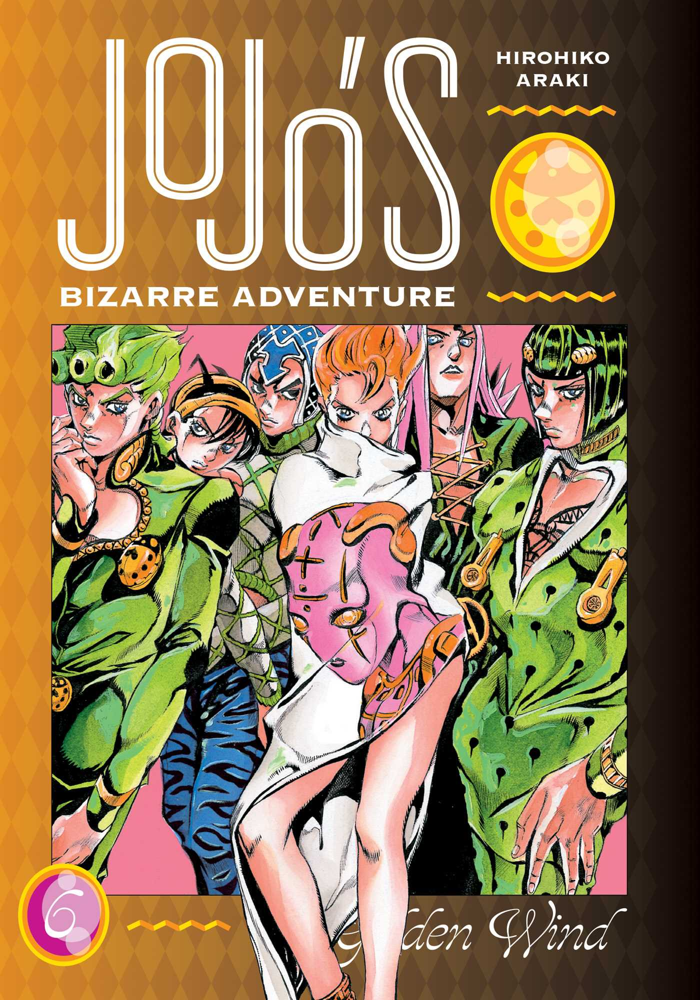
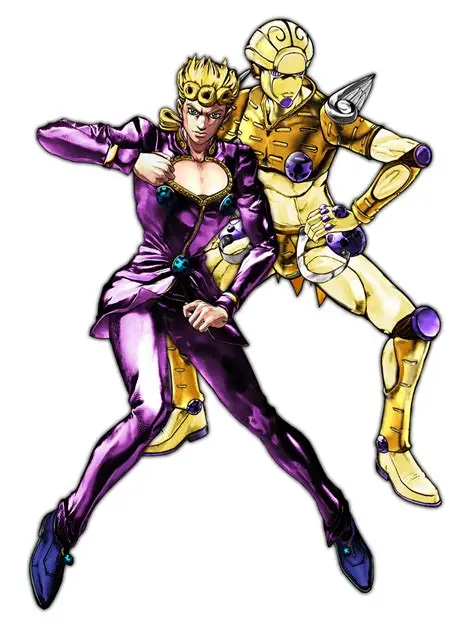
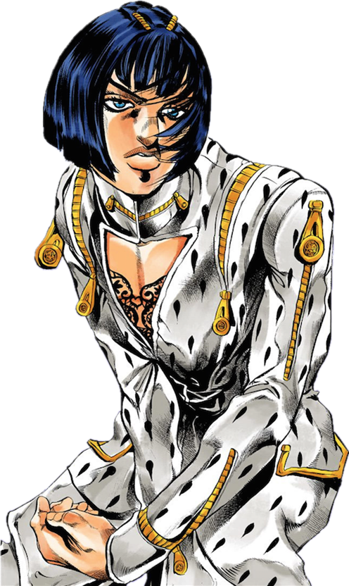
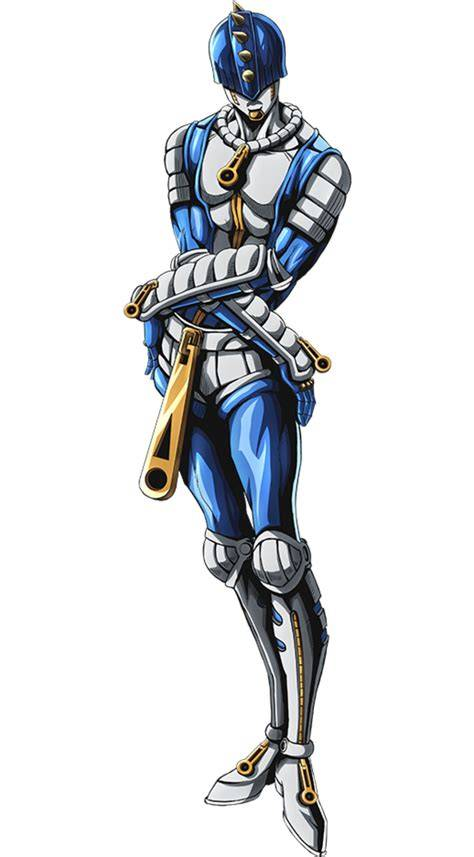
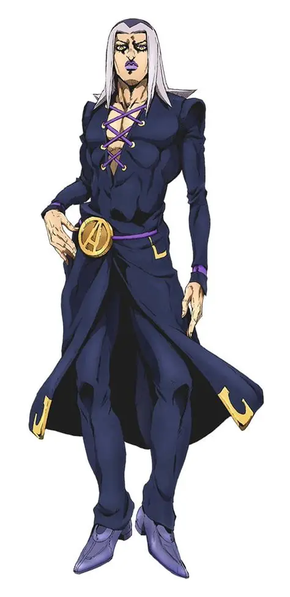
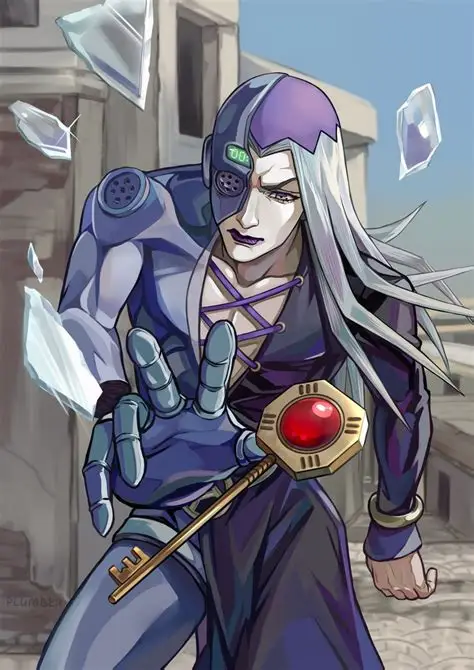
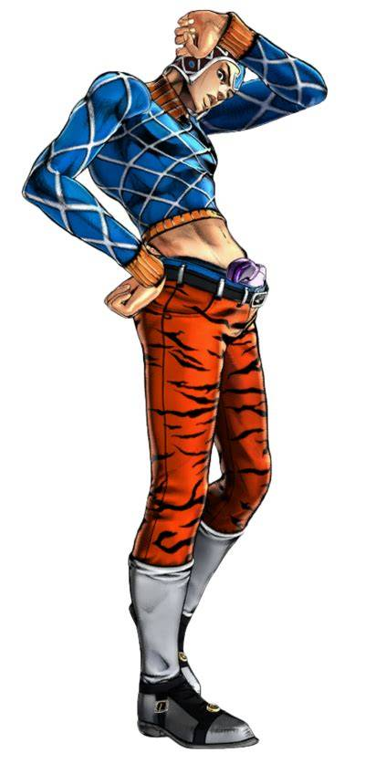
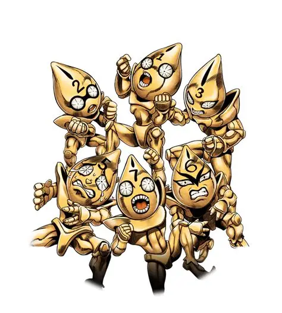
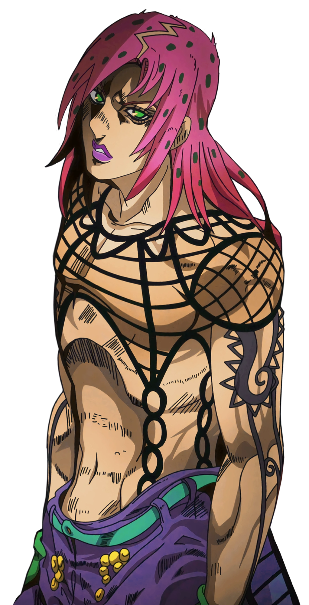
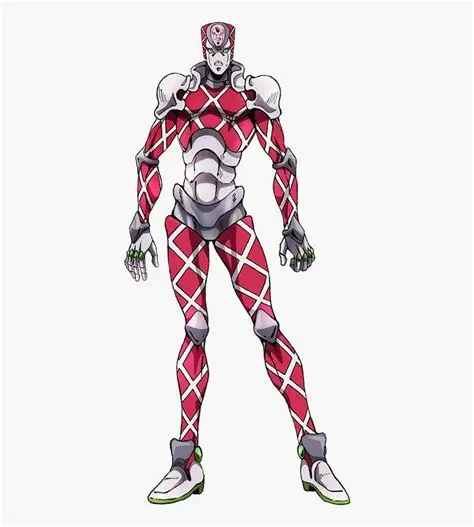

Parte 5: Golden Wind

Sinopsis
Giorno Giovanna sueña con ser un Gangster Star y entra en la organización criminal Passione para cambiar la mafia desde dentro. Pronto deberá proteger a la hija del jefe, perseguido por un misterioso líder.
🎵 Openings
| N.º | Canción | Artista | Año |
|---|---|---|---|
| 1 | Fighting Gold | Coda | 2018 |
| 2 | Uragirimono no Requiem | Daisuke Hasegawa | 2019 |
▶ Buscar el opening en YouTube
Opening 1: Fighting Gold
Opening 2: Uragirimono no Requiem
Personajes
| Imagen | Nombre | Rol | Descripción | Stand |
|---|---|---|---|---|
 | Giorno Giovanna | Protagonista | Joven decidido con un sueño. |  Gold Experience |
 | Bruno Bucciarati | Aliado | Líder del equipo. |  Sticky Fingers |
 | Leone Abbacchio | Aliado | Ex policía de carácter difícil. |  Moody Blues |
 | Guido Mista | Aliado | Pistolero supersticioso. |  Sex Pistols |
 | Diavolo | Antagonista | Jefe de Passione. |  King Crimson |
Sistema de poder (pulsa para desplegar)
La acción es más intensa y táctica, con Stands de lo más variado y combates donde la estrategia es clave.